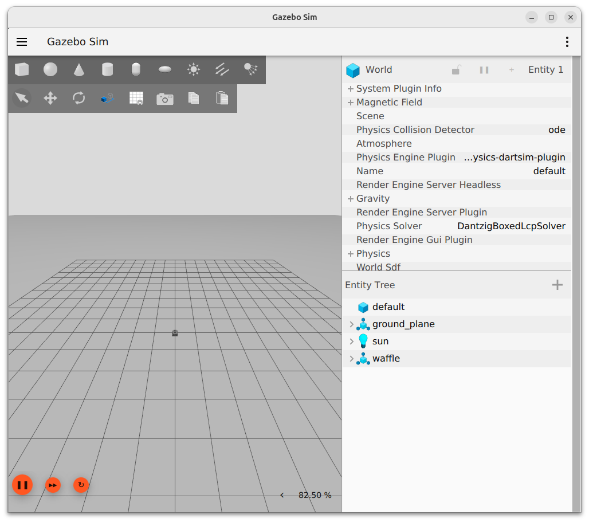
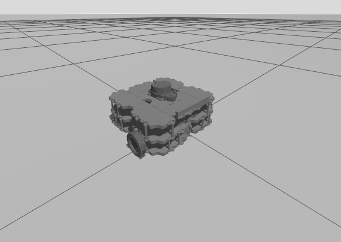
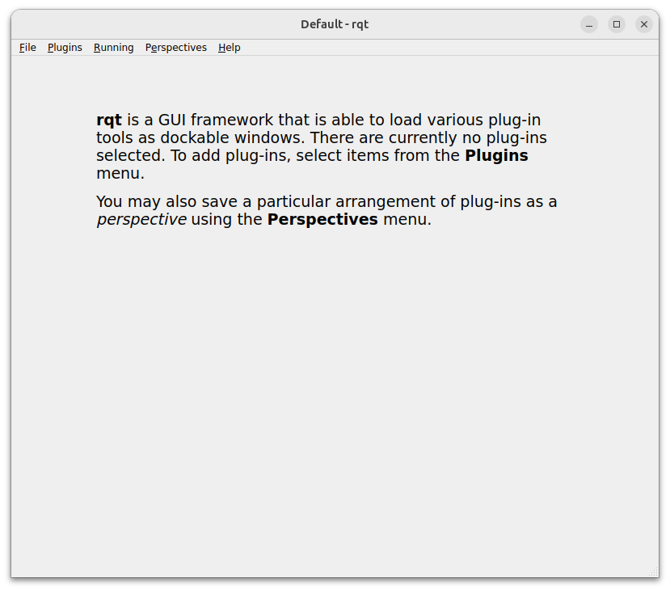
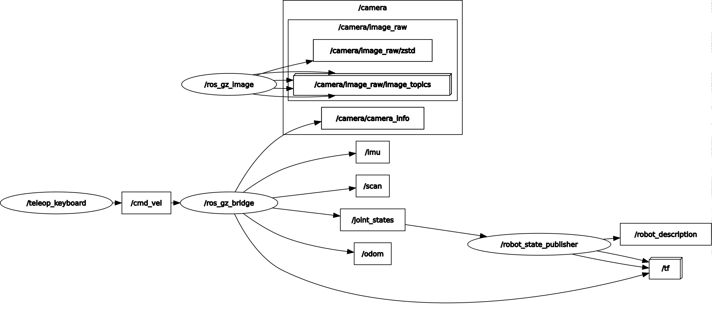
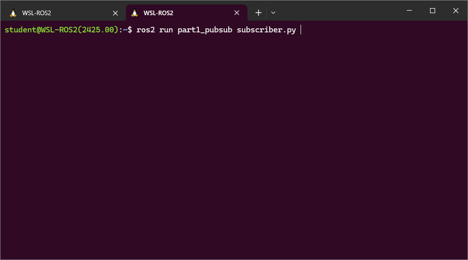
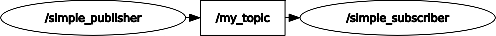

Lab 1: Getting Started with ROS 2
Introduction¶
In the first part of this lab course you will learn the basics of ROS 2 and become familiar with some key tools and principles of the framework, which will allow you to program robots and work with ROS 2 applications effectively.
Throughout this course, and from herein, we'll refer to ROS 2 as just "ROS" to make things easier!
Mainly, you will learn how to create some basic ROS Nodes using Python and get a taste of how communications work via ROS Topics and Interfaces.
First Steps¶
Step 1: Accessing a ROS 2 Environment for this Course¶
We will be working with ROS 2 (Jazzy) upon Ubuntu (24.04) see here for all the details on how to install or access a ROS environment for this course.
Step 2: Launch ROS¶
Launch your ROS environment.
You should now have access to ROS 2 via a Linux terminal instance, and we'll refer to this terminal instance as TERMINAL 1.
Step 3: Download The Course Repo¶
We've put together a few ROS packages specifically for this course. These all live within this GitHub repo, and you'll need to download and install this into your ROS environment now, before going any further.
-
In TERMINAL 1, Navigate into the "ROS Workspace" using the
cdcommand: -
Then, run the following command to clone the Course Repo from GitHub:
-
Once this is done, you'll need to build this using a tool called "Colcon":
Don't worry too much about what you just did right now. We'll cover this in more detail throughout the course. That's it for now though, we'll start using some of the packages that we've just installed a bit later on.
Exercise 1: Launching a simulation and making a robot move¶
Now that you're all up and running, let's launch ROS and fire up a simulation of our TurtleBot3 Waffle robot...
-
In TERMINAL 1 enter the following command to launch a simulation of a TurtleBot3 Waffle in an empty world:
-
A Gazebo Sim window should open:

- Zoom in and out using the scroll wheel on your mouse.
- Rotate the camera view by simultaneously pressing and holding the left mouse button and the Shift key on your keyboard, and then moving your mouse around.
Using both of these methods you should be able to get a better view of the robot, which is an approximate representation of a real one.

-
With the Gazebo simulation up and running, return to your terminal and open up a second terminal instance (TERMINAL 2)
-
Follow the instructions provided in the terminal to drive the robot around using specific buttons on your keyboard.
ROS Packages & Nodes¶
Packages¶
ROS applications are organised into packages. Packages are basically collections containing scripts, configurations and launch files (ways to launch those scripts and configurations), all of which relate to some common robot functionality. ROS uses packages as a way to organise all the programs running on a robot.
You will create a number of packages throughout this course, each containing different nodes, launch files and other things too. We'll start to explore this later on.
Nodes¶
ROS Nodes are executables that perform specific robot tasks and operations. Earlier on (for example) we used ros2 run to execute a node called teleop_keyboard, which allowed us to remotely control (or "teleoperate") the robot.
A ROS robot might have hundreds of individual nodes running simultaneously to carry out all its necessary operations and actions. Each node runs independently, but uses ROS communication methods to share data with the other nodes on the ROS Network.
The ROS Network¶
We can use the ros2 node command to view all the nodes that are currently active on a ROS Network.
Exercise 2: Visualising the ROS Network¶
You should currently have two terminal instances active: the first in which you launched the Gazebo simulation (TERMINAL 1) and the second with your teleop_keyboard node active (TERMINAL 2).
- Open up a new terminal instance now (TERMINAL 3).
-
Use the following command to have a look at which nodes are currently active on the network:
Only a handful of nodes should be listed:
-
We can visualise the connections between the active nodes by using an application called RQT. RQT is a collection of graphical tools that allow us to interact with and interrogate the ROS network. Launch the main RQT application by entering
rqtin TERMINAL 3 (you might see some warnings in the terminal when you do this, but don't worry about them):A window should then open:

-
From here, we then want to load the Node Graph plugin. From the top menu select
Plugins>Introspection>Node Graph. -
Select
Nodes/Topics (all)from the top-left most dropdown, and in theHidesection uncheck everything exceptDebugandParams(you may then need to hit the refresh button):
Here, nodes are represented by ellipses and topics by rectangles (hover over a region of the graph to enable colour highlighting).
This tool shows us that (amongst other things) the
/teleop_keyboardnode is communicating with another node called/ros_gz_bridge. The direction of the arrow tells us that/teleop_keyboardis a Publisher and/ros_gz_bridgeis a Subscriber. The two nodes communicate via a ROS Topic called/cmd_vel.
Publishers and Subscribers: A ROS Communication Method¶
ROS Topics are key to making things happen on a robot. Nodes can publish (write) and/or subscribe to (read) ROS Topics in order to share data around the ROS network. Data is published to topics using ROS Messages. As we've just learnt, the teleop_keyboard node was publishing messages to a topic (/cmd_vel) to make the robot move.
Let's have a look at this in a bit more detail...
Exercise 3: Exploring ROS Topics and Messages¶
We can find out more about the /cmd_vel topic by using the ros2 topic command.
-
Open up yet another new terminal instance (TERMINAL 4) and type the following:
This shows us all the topics that are currently available on the ROS network (a lot of which we saw in the RQT Node Graph above):
/camera/camera_info /camera/image_raw /camera/image_raw/compressed /camera/image_raw/compressedDepth /camera/image_raw/theora /camera/image_raw/zstd /clock /cmd_vel /imu /joint_states /odom /parameter_events /robot_description /rosout /scan /tf /tf_staticLet's find out a bit more about
/cmd_vel... -
Use the
topic infocommand now:This should provide the following output:
We've now established the following information about
/cmd_vel:- The topic has 1 publisher writing data to it (the
/teleop_keyboardnode, as established from the RQT Graph) - The topic also has 1 subscriber reading this data (the
ros_gz_bridgenode) -
Data is transmitted on the
/cmd_veltopic using an Interface. This particular interface is defined as:geometry_msgs/msg/TwistStamped.Interface Definitions
Interfaces are standardised data structures that are used to broadcast data across the ROS network. The interface definition above (and, indeed, every interface definition) has three parts to it:
geometry_msgs: the name of the ROS package that this interface belongs to.msg: that this is a topic message rather than another type of interface (there are three types of interface, and we'll learn about the other two later in this course).TwistStamped: the actual interface name
In summary then, we've established that if we want to make the robot move we need to publish
TwistStampedmessages to the/cmd_veltopic.
- The topic has 1 publisher writing data to it (the
-
Still in TERMINAL 4, use the
ros2 interfacecommand to show us the (standardised) data structure used by theTwistStampedInterface:From this, we obtain the following:
std_msgs/Header header builtin_interfaces/Time stamp int32 sec uint32 nanosec string frame_id Twist twist Vector3 linear float64 x float64 y float64 z Vector3 angular float64 x float64 y float64 zWe'll learn more about what this means in Lab 2.
-
To finish, enter Ctrl+C in each of the three terminals that should currently have ROS processes running (Terminals 1, 2 and 3). The associated Gazebo and RQT Node Graph windows should close as a result of this too.
Creating Your First ROS Applications¶
Shortly we'll create some simple publisher and subscriber nodes in Python and send simple data between them. As we learnt earlier though, ROS nodes must always live within packages, and so we need to create a package first in order to start creating our own ROS nodes.
It's important to work in a specific filesystem location when we create and work on our own ROS packages. These are called "Workspaces" and you should already have one ready to go within your local ROS environment called ros2_ws, with a subdirectory within it called src:
All new packages MUST be located inside the src folder of the workspace!!
Exercise 4: Creating your own ROS Package¶
The ros2 Command Line Interface (CLI) that we've been using so far includes a tool to create new ROS packages: ros2 pkg create. We've therefore created our own ROS 2 Package (on GitHub).
-
Navigate into the
ros2_ws/srcdirectory using the Linuxcdcommand . In TERMINAL 1 enter the following: -
From here, use
gitto clone our ROS 2 Package from GitHub: -
Navigate into the package directory (using
cd): -
treeis a Linux command which shows us the content of the current directory in a nice tree-like format. Usetreenow to show the current content of thepart1_pubsubdirectory:...which should yield:
. ├── CMakeLists.txt ├── package.xml ├── part1_pubsub_modules │ ├── __init__.py │ └── tb3_tools.py └── scripts ├── basic_velocity_control.py └── stop_me.py 3 directories, 6 filesscripts: is a directory that will contain all the Python Nodes that we'll create (you'll notice a couple in there already).-
part1_pubsub_modules: is a directory that we can use to store Python modules, that we can then import into our main Python nodes(
from part1_pubsub_modules.tb3_tools import ..., for example) -
package.xmlandCMakeLists.txt: are both files that define our package, and how it must be built (usingcolcon build). We'll explore these more shortly...
Exercise 5: Creating a publisher node¶
-
From the root of your
part1_pubsubpackage, navigate to thescriptsfolder using thecdcommand. -
touchis a Linux command that we can use to create an empty file. Use this to create an empty file calledpublisher.py, which we will add content to shortly: -
Use
lsto verify that the file has been created, but use the-loption with this, so that the command provides its output in "a long listing format":This should output something similar to the following:
-rwxr-xr-x 1 student student 1500 MMM DD HH:MM minimal_node.py -rw-r--r-- 1 student student 0 MMM DD HH:MM publisher.py -rwxrwxr-x 1 student student 816 MMM DD HH:MM stop_me.pyThis confirms that the
publisher.pyfile exists, and the0on that line indicates that the file is empty (i.e. its current size is 0 bytes), which is what we'd expect. -
We therefore now need to open the file and add content to it. We'd recommend using Visual Studio Code (VS Code) as an IDE for this course. Launch VS Code and access your ROS 2 environment (how you do this will vary based on how you have ROS installed on your machine).
-
Using the VS Code File Explorer, locate the empty
publisher.pyfile that you have just created (~/ros2_ws/src/part1_pubsub/scripts/) and click on the file to open it in the main editor. -
The
publisher.pycode is provided here:The publisher.pycodeTake a look at this and be aware of the following additional content on this page too:
- Click on the icons to expand the annotations in the code. It's important that you understand how the code works, so make sure you read these annotations!
- There's a further section underneath the code called "Defining Package Dependencies". Make sure you follow the steps outlined here too!
-
Once you've reviewed the code take a copy of it, paste it into your
publisher.pyfile and save it. -
Now, we need to add our
publisher.pyfile as an executable to our package'sCMakeLists.txt. This will ensure that it then gets built when we runcolcon build(in the next step).In VS Code, open the
CMakeLists.txtfile that is at the root of yourpart1_pubsubpackage directory (ros2_ws/src/part1_pubsub/CMakeLists.txt). Locate the lines (near the bottom of the file) that read:# Install Python executables install(PROGRAMS scripts/basic_velocity_control.py scripts/stop_me.py DESTINATION lib/${PROJECT_NAME} )Add the
publisher.pyNode as follows: -
Now, use
colconto build your package.-
You MUST run this from the root of your Colcon Workspace (i.e.:
~/ros2_ws/), NOT thesrcdirectory (~/ros2_ws/src/), so navigate there now usingcd: -
Then, use the following
colconcommand to build your package:What do the additional arguments above do?
--packages-select: Build only thepart1_pubsubpackage, nothing else (without thiscolconwould attempt to build every package in the workspace).--symlink-install: Ensures that you don't have to re-runcolcon buildevery time you make a change to your package's executables (i.e. your Python nodes in thescriptsdirectory).
-
Finally, "re-source" your
bashrc:
-
-
We should now be able to run this node using the
ros2 runcommand.Remember:
ros2 run {package name} {script name}, so:
Something not quite right? If you typed the command exactly as above and then tried to run it, you probably just received the following error:
``` { .txt .no-copy }
No executable found
```
<a name="chmod"></a>
When we create a file using `touch` it is given certain *permissions* by default. Recall the output of the `ls -l` command that we ran before ([click here to go back to this for a reminder](#no-exec-perms)):
``` { .txt .no-copy }
-rw-r--r-- 1 student student 0 MMM DD HH:MM publisher.py
```
The first bit tells us about the permissions that are currently assigned to the `publisher.py` file:
<center>`-rw-r--r--`</center>
This tells us *who* has permission to do *what* with this file and (currently) the first bit: `-rw-`, tells us that we have permission to **r**ead or **w**rite to it. There is a *third* option we can set too though, which is the *execute* permission, and we can set this using the `chmod` **Linux command**...
-
Use
cdto navigate back to our package'sscriptsdirectory (where thepublisher.pyfile is located):Then run the
chmodcommand as follows to give thepublisher.pyfile execute permissions: -
Now, run
ls -lagain to see what has changed:We have now granted permission for the file to be executed too:
-
OK, now use
ros2 runagain to run thepublisher.pynode (remember:ros2 run {package name} {script name}).If you see a message in the terminal similar to the following then the node has been launched successfully:
-
We can further verify that our publisher node is running using a number of different tools. Try running the following commands in TERMINAL 2:
ros2 node list: This will provide a list of all the nodes that are currently active on the system. Verify that the name of our publisher node is visible in this list (it's probably the only item in the list at the moment!)ros2 topic list: This will provide a list of the topics that are currently being used by nodes on the system. Verify that the name of the topic that our publisher is publishing messages to (/my_topic) is present within this list.
Interrogating ROS Topics¶
So far we have used the ros2 topic ROS command with two additional arguments:
list: to provide us with a list of all the topics that are active on our ROS system, andinfo: to provide us with information on a particular topic of interest.
We can find out what other sub-commands are available for us to use with ros2 topic by calling for help! Run the following in TERMINAL 2:
Which should provide us with a list of all the options:
Commands:
bw Display bandwidth used by topic
delay Display delay of topic from timestamp in header
echo Output messages from a topic
find Output a list of available topics of a given type
hz Print the average publishing rate to screen
info Print information about a topic
list Output a list of available topics
pub Publish a message to a topic
type Print a topic's type
Call `ros2 topic <command> -h` for more detailed usage.
Let's talk about a few of these:
-
ros2 topic hz {topic name}provides information on the frequency (in Hz) at which messages are being published to a topic:This should tell us that our publisher node is publishing messages to the
/my_topictopic at (or close to) 1 Hz, which is exactly what we ask for in thepublisher.pyfile (in the__init__part of ourPublisherclass). Enter Ctrl+C to stop this command. -
ros2 topic echo {topic name}shows the messages being published to a topic:This will provide a live stream of the messages that our
publisher.pynode is publishing to the/my_topictopic. Enter Ctrl+C to stop this. -
We can see some additional options for the
echocommand by viewing the help documentation for this too:From here, for instance, we can learn that if we just wanted to print the first message that was received we could use the
--onceoption, for example:
Exercise 6: Creating a subscriber node¶
To illustrate how information can be passed from one node to another (via topics and messages) we'll now create another node to subscribe to the topic that our publisher node is broadcasting messages to.
-
In TERMINAL 2 use the filesystem commands that were introduced earlier (
cd,ls, etc.) to navigate to thescriptsfolder of yourpart1_pubsubpackage. -
Use the same procedure as before to create a new empty Python file called
subscriber.pyand remember to make it executable! -
Then, open this newly created
subscriber.pyfile in VS Code. -
The code for the
subscriber.pyfile is provided here:The subscriber.pycodeOnce again, it's important that you understand how this code works, so make sure you read the code annotations!
Fill in the
{BLANK}!This code won't work out-of-the-box! Look out for a
{BLANK}, which is a prompt for you to replace this text with something else! -
We now need to add this as an additional package executable.
Open up the
CMakeLists.txtfile at the root of yourpart1_pubsubpackage directory again, head back to the# Install Python executablessection and add thesubscriber.pyfile as illustrated below: -
Now we need to
colcon buildagain.-
Make sure you're at the root of the Colcon Workspace:
-
Run
colcon buildon only thepart1_pubsubpackage: -
And then re-source the
bashrc:
-
-
Use
ros2 run(in TERMINAL 2) to execute your newly createdsubscriber.pynode (remember:ros2 run {package name} {script name}). If your publisher and subscriber nodes are working correctly you should see an output like this:
-
Interrogate your ROS network:
-
As before, we can find out what nodes are running on our system by using the
ros2 node listcommand. Run this in TERMINAL 3, you should see both your publisher and subscriber nodes listed there. -
Use the
ros2 topiccommand to list all the topics that are available on the network. You should see/my_topiclisted there. -
Use the
ros2 topiccommand again to find more info onmy_topic. -
Use the
ros2 interfacecommand to show you what type of data is being sent between the two nodes.
-
-
Finally, close down your publisher and subscriber nodes by entering Ctrl+C in the terminals where they are running (should be 1 & 2).
Exercise 7: Defining our own message¶
We've just created a publisher and subscriber that were able to communicate with one another via a topic.

The data that the publisher was sending to the topic was very simple: a example_interfaces/msg/String type message.
ros2 topic info /my_topic
Type: example_interfaces/msg/String
Publisher count: 1
Subscription count: 1
This message just has one field called data of the type string:
ROS messages will generally be more complex than this, typically containing several fields in a single message. We'll define our own custom message now, this time with two fields, so you can see how things work with slightly more complex data structures.
-
Message interfaces must be defined within a
msgfolder at the root of our package directory, so let's create this folder now in TERMINAL 1:-
First, navigate into your package:
-
Then use
mkdirto make a new directory:
-
-
We'll create a message called
Example, and to do this we'll need to create a new file calledExample.msginside themsgfolder: -
To define the data structure of this message, we now need to open up the file and add the following content:
The message will therefore have two fields:
# Field Name Data Type 1 infostring2 timeint32We can give our fields any names that we want, but the data types must be either built-in-types or other pre-existing ROS interfaces.
-
We now need to declare this message in our package's
CMakeLists.txtfile, so that the necessary Python code can be created (bycolcon build) to allow us to import this message into our own Python files.Add the following lines to your
part1_pubsub/CMakeLists.txtfile, above theament_package()line: -
We also need to modify our
package.xmlfile. Add the following lines to this one, just above the<export>line: -
We can now use Colcon to generate the necessary source code for the message:
-
First, make sure you're in the root of the ROS 2 Workspace:
-
Then run
colcon build: -
And finally re-source the
.bashrc:
-
-
We can now verify that this worked with some more
ros2command line tools:-
First, list all the ROS messages that are available to us on our system:
Scroll through this list and see if you can find our message in there (it'll be listed as
part1_pubsub/msg/Example) -
Next, show the data structure of the interface:
This should match with how we defined it in our
part1_pubsub/msg/Example.msgfile.
-
Exercise 8: Using a custom ROS Message¶
-
Create a copy of the
publisher.pyfile from Exercise 5. Let's do this from the command line too (in TERMINAL 1):-
Navigate into your package's
scriptsfolder: -
And use the
cpcommand to make a copy of thepublisher.pyfile and call this new filecustom_msg_publisher.py: -
Let's create a copy of the
subscriber.pyfile too, while we're here:
-
-
Declare these two new files as additional executables in our
CMakeLists.txt: -
Run Colcon again (last time now!):
- First:
- Then:
- And finally:
-
Now modify your
custom_msg_publisher.pyfile according to the code provided below:The custom_msg_publisher.pycode -
Modify the
custom_msg_subscriber.pynode now to accommodate the new interface messages that are being published to/my_topic.
Submission on Google Classroom¶
To complete Lab 1, you must finish the final coding challenge below and upload your package to the assignment entry on Google Classroom.
Final Challenge: timed_subscriber.py¶
Create a new node that demonstrates your ability to use custom messages and perform real-time data processing.
- Create the file: In your
scriptsfolder, create a file namedtimed_subscriber.pyand make it executable usingchmod +x. - The Logic:
- Subscribe to
/my_topicusing your custompart1_pubsub/msg/Exampleinterface. - In the callback function, extract the
timevalue from the incoming message. - Calculate the difference between the current system time and the
timevalue sent in the message. - Hint: You can get the current time in seconds within a ROS 2 node using:
current_time = self.get_clock().now().to_msg().sec
- Subscribe to
- Output: Use
self.get_logger().info()to print the result in the following format:[INFO]: Message: "Hello", Latency: 2 seconds
Preparation for Upload¶
Before submitting, ensure your CMakeLists.txt is updated to include timed_subscriber.py in the install(PROGRAMS ...) section and that your package builds successfully with colcon build.
- Clean your workspace: We only need your source code. Navigate to your source folder:
- Compress your package: Use the following command to create a zip file of your package:
Submission Checklist¶
Your part1_submission.zip must contain the following files within the part1_pubsub folder:
msg/Example.msg: Your custom interface definition.package.xml: Updated withrosidldependencies.CMakeLists.txt: Updated with message generation and all script executables.scripts/: Containing all 5 nodes:publisher.pysubscriber.pycustom_msg_publisher.pycustom_msg_subscriber.pytimed_subscriber.py(The Challenge Task)
Upload your part1_submission.zip to the "Lab 1" assignment on Google Classroom.